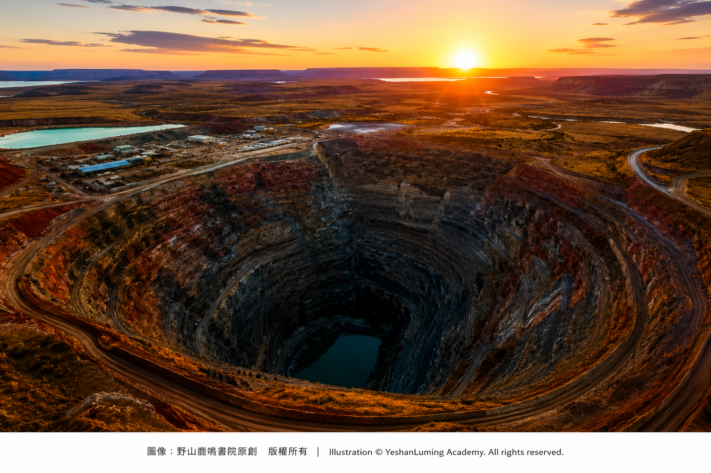
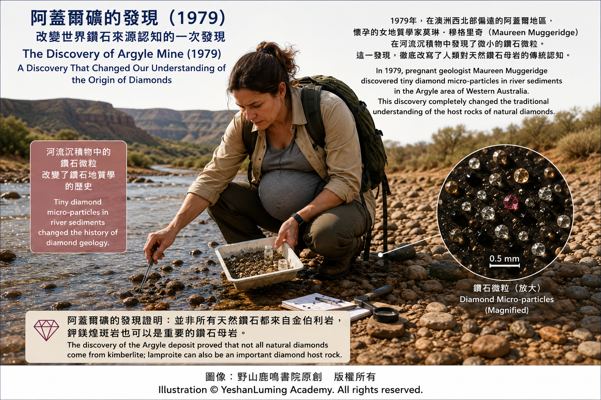
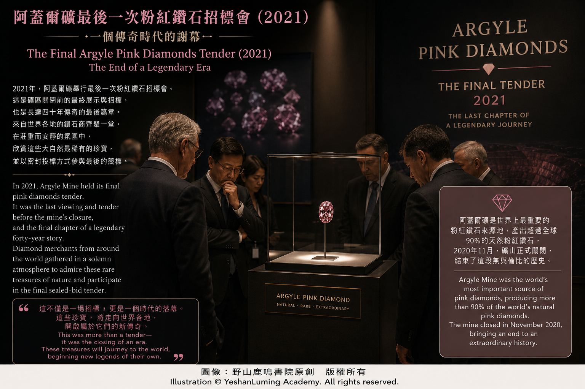

粉鑽阿蓋爾礦興衰史·從鑽石開採業傳奇到光榮退場From a Legend of the Diamond Industry to an Honorable Farewell
The World of Gemstones · Diamond SeriesFrom a Legend of the Diamond Industry to an Honorable Farewell
The World of Gemstones · Diamond Series粉鑽阿蓋爾礦興衰史·從鑽石開採業傳奇到光榮退場
寶石世界·鑽石篇
寶石世界·鑽石篇（111）The World of Gemstones · Diamond Series (111)
澳洲的阿蓋爾鑽石礦，從發現到正式投產，鑽石蘊藏量一度超過當時全球其他鑽石礦已知蘊藏量的總和；再到資源逐漸枯竭、最終自動關閉，可以說是世界鑽石工業史上的一段傳奇。
它的重要性，不僅在於改變了人類對鑽石母岩與粉紅鑽石致色機制的理解，也深刻改變了全球鑽石產業的發展。
在了解阿蓋爾粉紅鑽石的形成原因，以及它對礦物學、寶石學與鑽石探勘理論所帶來的革命性影響之後，下面就讓我們一起回顧這座傳奇礦山在人類鑽石礦業史上的輝煌歷程。
澳洲阿蓋爾鑽石礦位於西澳洲極為偏遠、氣候炎熱的東金伯利地區。從發現到關閉，它走過了約半個世紀的輝煌歲月。
阿蓋爾鑽石礦（Argyle Diamond Mine）的發現，是二十世紀鑽石探勘史上最著名、也最具傳奇色彩的篇章之一。
在上個世紀七十年代以前，全球鑽石市場主要由非洲掌控，澳洲一直被認為不具備形成大型鑽石礦床的地質條件。當時，一家名為阿斯頓合資企業（Ashton Joint Venture）的探勘團隊，在西澳大利亞州偏遠的金伯利地區（Kimberley）展開大規模地毯式搜索。
他們並非盲目挖掘，而是透過分析河流沉積物中的指示礦物，順藤摸瓜地追蹤鑽石的來源。
澳洲的阿蓋爾鑽石礦，從發現到正式投產，鑽石蘊藏量一度超過當時全球其他鑽石礦已知蘊藏量的總和；再到資源逐漸枯竭、最終自動關閉，可以說是世界鑽石工業史上的一段傳奇。
它的重要性，不僅在於改變了人類對鑽石母岩與粉紅鑽石致色機制的理解，也深刻改變了全球鑽石產業的發展。
在了解阿蓋爾粉紅鑽石的形成原因，以及它對礦物學、寶石學與鑽石探勘理論所帶來的革命性影響之後，下面就讓我們一起回顧這座傳奇礦山在人類鑽石礦業史上的輝煌歷程。
澳洲阿蓋爾鑽石礦位於西澳洲極為偏遠、氣候炎熱的東金伯利地區。從發現到關閉，它走過了約半個世紀的輝煌歲月。
阿蓋爾鑽石礦（Argyle Diamond Mine）的發現，是二十世紀鑽石探勘史上最著名、也最具傳奇色彩的篇章之一。
在上個世紀七十年代以前，全球鑽石市場主要由非洲掌控，澳洲一直被認為不具備形成大型鑽石礦床的地質條件。當時，一家名為阿斯頓合資企業（Ashton Joint Venture）的探勘團隊，在西澳大利亞州偏遠的金伯利地區（Kimberley）展開大規模地毯式搜索。
他們並非盲目挖掘，而是透過分析河流沉積物中的指示礦物，順藤摸瓜地追蹤鑽石的來源。
1979年，英國籍女性地質學家莫琳·穆格里奇（Maureen Muggeridge）與同事約翰·托維（John Towie），在東金伯利地區阿蓋爾湖附近的煙霧溪（Smoke Creek）流域進行河流沉積物採樣。當時懷有六個月身孕的穆格里奇，在該區域發現了極其微小的沖積鑽石，以及與鑽石礦床密切相關的指示礦物。
她的團隊立刻意識到，這些寶石是被河流從上游搬運至此的，這成為發現巨型鑽石礦床的重要線索。

Click to enlarge
順著煙霧溪的線索，探勘團隊開始向上游追蹤。1979年10月2日，探勘隊成員華倫·阿特金森（Warren Atkinson）和弗蘭克·休斯（Frank Hughes）攀登至半山腰時，在一個白蟻丘上發現了閃閃發光的顆粒。近距離檢查後，確認那是一顆鑲嵌在蟻丘上的天然鑽石。
在自然環境中，白蟻會將地下深處的微小顆粒搬運至地表築巢。這一偶然的發現，不僅充滿傳奇色彩，也直接引導探勘隊找到了鑽石的母岩——一條蘊藏量驚人的火山岩管，也就是後來聞名世界的阿蓋爾鑽石礦脈。
1983年，阿蓋爾礦開始商業生產，初期主要開採沖積礦床。1985年，大型露天礦場正式投入生產。它的出現，對當時由戴比爾斯（De Beers）高度主導的全球鑽石市場，帶來了巨大震動與衝擊。
阿蓋爾礦投產後，很快以驚人的產量刷新世界紀錄。1994年前後，在產量高峰期，阿蓋爾礦一年可生產四千多萬克拉鑽石，一度占全球天然鑽石年產量的三分之一以上。
然而，阿蓋爾礦出產的鑽石，絕大多數並不是高品質珠寶鑽石，而是褐色小鑽、低淨度鑽石及工業級鑽石。
戴比爾斯及傳統高級珠寶市場，最初並不看好這些價格較低的小型褐色鑽石。但澳洲礦業公司把大量小顆粒原石送往印度蘇拉特（Surat）進行珠寶式切磨加工。
今天，全世界九成以上的小型鑽石切磨加工，仍集中於印度蘇拉特，使它成為世界最大的鑽石加工中心之一。阿蓋爾礦的大量原石供應，被普遍認為是推動蘇拉特快速崛起的重要因素之一。
這一舉措直接推動了印度鑽石切磨產業的快速發展，也使原本難以負擔鑽石珠寶的普通消費者，開始能夠購買由小顆粒鑽石鑲嵌而成的首飾。
為了改善褐色鑽石原本不受市場歡迎的形象，阿蓋爾礦及其母公司力拓集團（Rio Tinto）展開了極為成功的市場推廣，把不同色調的褐色鑽石命名為浪漫的「香檳鑽」（Champagne Diamonds）與「干邑鑽」（Cognac Diamonds）。
這些富有創造性的命名，加上成功的市場行銷，使曾經被視為低價原石的褐色鑽石，逐漸成為具有獨特風格的珠寶產品。
雖然阿蓋爾礦的大部分產量是褐色小鑽和工業級鑽石，但真正使它名震天下的，卻是其中比例極低的粉紅鑽、紅鑽與紫紅色鑽石。
它們在阿蓋爾礦總產量中所占比例不到百分之一，真正達到頂級品質、能夠進入年度招標會的鑽石，更是少之又少。
為了最大限度展現這些珍稀粉紅鑽石的價值，力拓集團自1984年起，每年舉辦高規格的阿蓋爾粉紅鑽石招標會（Argyle Pink Diamonds Tender）。
與一般公開拍賣不同，礦方每年只會從當年產量中挑選數十顆最頂級的粉紅鑽、紅鑽及其他稀有彩鑽，邀請全球少數獲得資格認證的珠寶商、收藏家與專業買家參與競標。
能夠入選 Argyle Pink Diamonds Tender，本身就代表它已躋身世界最高等級收藏級彩色鑽石之列。
這些鑽石曾在紐約、倫敦、香港等國際城市展出，競標通常採用密封報價（Sealed Bids）的形式進行。
阿蓋爾粉紅鑽石獨特的高飽和色彩、紫色或紫紅色調，以及極為有限的供應量，使它們在數十年間成為世界最具代表性的收藏級彩色鑽石之一，價格也隨之持續攀升。
隨著露天礦坑越挖越深，礦坑最深處達到約六百公尺，繼續露天開採的成本與難度不斷增加。
為了延長礦區壽命，力拓投入巨額資金，並於2013年把阿蓋爾礦轉型為地下坑道開採。
然而，再豐富的地下資源，終究也會有枯竭的一天。
2020年11月3日，隨著最後一批礦石被送上地表，已開採三十七年、累計生產約八億六千萬克拉鑽石的阿蓋爾礦，正式停止採礦作業。而發現阿蓋爾礦床的穆格里奇女士，也因此在地質學與礦業史上留下了不朽的名字。
阿蓋爾礦關閉後，它的故事並沒有立刻結束。
2021年，力拓舉行了最後一屆阿蓋爾粉紅鑽石招標會。隨著這座曾經供應全球絕大部分天然粉紅鑽石的礦山正式關閉，新的阿蓋爾粉紅鑽石來源幾乎消失。

Click to enlarge
市場普遍認為，阿蓋爾粉紅鑽石自此正式進入「存量時代」。現存的阿蓋爾粉紅鑽，主要只能透過收藏家、珠寶商及拍賣市場流轉，其稀有性與收藏價值也因此受到全球市場高度關注。
從2021年開始，力拓集團展開長期環境復育工作，逐步拆除礦區設施、處理井口與廢棄物，並與當地原住民傳統土地所有者合作，修復這片曾經承載地質奇蹟與人類財富傳奇的土地。
阿蓋爾礦的歷史，是一場從荒漠河谷、沖積平原與白蟻丘線索，到世界頂級奢華珠寶的巨大跨越。
它向人類證明，大自然最猛烈的地質力量——板塊碰撞、深源壓力與晶格塑性變形，最終竟然可以轉化為人類眼中最溫柔、最令人心醉的粉紅色光芒。
澳洲阿蓋爾礦的重要性，不僅在於它出產了獨特而珍貴的粉紅鑽石，更在於它從根本上改變了地質學、礦物學、寶石學及鑽石探勘業對鑽石母岩與礦床環境的傳統認知。
鑽石不僅可以由金伯利岩帶到地表，也可以存在於鉀鎂煌斑岩之中。這項發現，不僅拓寬了人類尋找鑽石礦床的範圍，也極大地豐富了地質學、礦物學與寶石學的知識體系。
說實話，今天的人類科學雖然已經取得巨大進步，但相對於浩瀚宇宙和大自然，我們真正了解的，其實仍然只是其中極小的一部分。
就鑽石而言，它們的故事，也並不只存在於地球上的金伯利岩與鉀鎂煌斑岩之中。
在宇宙深處，科學家也在研究富含碳的行星、隕石與星際物質。某些理論模型曾推測，在極端壓力與富碳環境中，其他星球內部也可能形成大量鑽石。
距離地球約四十光年的系外行星巨蟹座55 e（55 Cancri e），曾經因早期的富碳行星模型而被媒體形容為「鑽石行星」。不過，隨著觀測資料不斷更新，這顆行星是否真的含有大量鑽石，目前仍然是一項尚未完全證實的科學推測，而不能視為既定事實。
但宇宙與鑽石之間，確實存在著令人著迷的聯繫。
有一類被稱為黑色鑽石或碳金剛石（Carbonado）的特殊鑽石，其形成來源至今仍存在爭議。部分科學家提出，它們可能與隕石撞擊、地外物質，甚至早期宇宙環境有關；也有研究認為，它們仍可能形成於地球內部。
當人類逐漸理解粉紅鑽石如何在地球深處誕生之後，又遇到了一種來源更加神祕、外觀更加獨特的鑽石——黑色鑽石。
下一篇，我們將離開澳洲的紅色大地，把目光投向更加遙遠的星空、宇宙，探索黑色鑽石那至今仍充滿謎團的神祕世界。
（未完待續）
Australia’s Argyle Diamond Mine was a legend in the history of the global diamond industry. From its discovery and formal entry into production, when its diamond reserves were once believed to exceed the combined known reserves of all other diamond mines in the world, to the gradual depletion of its resources and its eventual closure, Argyle followed an extraordinary path.
Its importance lay not only in changing humanity’s understanding of diamond host rocks and the color-forming mechanism of pink diamonds. It also profoundly reshaped the development of the global diamond industry.
Having explored the origin of Argyle’s pink diamonds and the revolutionary impact they had on mineralogy, gemology, and theories of diamond exploration, let us now look back on the remarkable history of this legendary mine.
The Argyle Diamond Mine was located in the remote and intensely hot East Kimberley region of Western Australia. From discovery to closure, it experienced nearly half a century of extraordinary achievement.
The discovery of the Argyle Diamond Mine was one of the most celebrated and legendary chapters in the history of twentieth-century diamond exploration.
Before the 1970s, the global diamond market was dominated primarily by Africa, and Australia was widely believed to lack the geological conditions necessary for the formation of a major diamond deposit. At that time, an exploration group known as the Ashton Joint Venture began an extensive, systematic search across the remote Kimberley region of Western Australia.
The team did not dig blindly. Instead, it analyzed indicator minerals in river sediments and followed those geological clues upstream in search of the source of the diamonds.
Australia’s Argyle Diamond Mine was a legend in the history of the global diamond industry. From its discovery and formal entry into production, when its diamond reserves were once believed to exceed the combined known reserves of all other diamond mines in the world, to the gradual depletion of its resources and its eventual closure, Argyle followed an extraordinary path.
Its importance lay not only in changing humanity’s understanding of diamond host rocks and the color-forming mechanism of pink diamonds. It also profoundly reshaped the development of the global diamond industry.
Having explored the origin of Argyle’s pink diamonds and the revolutionary impact they had on mineralogy, gemology, and theories of diamond exploration, let us now look back on the remarkable history of this legendary mine.
The Argyle Diamond Mine was located in the remote and intensely hot East Kimberley region of Western Australia. From discovery to closure, it experienced nearly half a century of extraordinary achievement.
The discovery of the Argyle Diamond Mine was one of the most celebrated and legendary chapters in the history of twentieth-century diamond exploration.
Before the 1970s, the global diamond market was dominated primarily by Africa, and Australia was widely believed to lack the geological conditions necessary for the formation of a major diamond deposit. At that time, an exploration group known as the Ashton Joint Venture began an extensive, systematic search across the remote Kimberley region of Western Australia.
The team did not dig blindly. Instead, it analyzed indicator minerals in river sediments and followed those geological clues upstream in search of the source of the diamonds.
In 1979, British geologist Maureen Muggeridge and her colleague John Towie were collecting river-sediment samples in the Smoke Creek drainage near Lake Argyle in the East Kimberley region. Muggeridge, who was six months pregnant at the time, discovered extremely small alluvial diamonds together with indicator minerals closely associated with diamond deposits.
Her team immediately realized that these gems had been transported downstream from somewhere farther upriver. This became a crucial clue in the discovery of an enormous diamond deposit.
Click to enlarge
Following the clues from Smoke Creek, the exploration team began tracing the source upstream. On October 2, 1979, team members Warren Atkinson and Frank Hughes were climbing partway up a hillside when they noticed glittering particles embedded in a termite mound. Upon closer examination, they confirmed that one of those particles was a natural diamond.
In the natural environment, termites carry tiny particles from deeper underground to the surface while constructing their nests. This chance discovery was not only filled with legendary drama; it also led the exploration team directly to the diamond-bearing host rock—an astonishing volcanic pipe that would later become known around the world as the Argyle diamond deposit.
In 1983, Argyle began commercial production, initially focusing mainly on alluvial deposits. In 1985, the large open-pit mine formally entered operation. Its emergence sent a powerful shock through a global diamond market then heavily dominated by De Beers.
After production began, Argyle quickly shattered world records with its extraordinary output. Around 1994, at the height of production, the mine produced more than forty million carats of diamonds in a single year and accounted for more than one-third of the world’s annual natural-diamond production.
Yet the overwhelming majority of Argyle’s diamonds were not high-quality gems. Most were small brown diamonds, low-clarity stones, or industrial-grade diamonds.
De Beers and the traditional luxury-jewelry market initially showed little interest in these lower-priced small brown diamonds. Australian mining companies, however, sent large quantities of the smaller rough stones to Surat, India, for cutting and polishing into jewelry-grade products.
Today, more than ninety percent of the world’s small-diamond cutting and polishing remains concentrated in Surat, making it one of the largest diamond-processing centers in the world. Argyle’s vast supply of rough diamonds is widely regarded as one of the important forces behind Surat’s rapid rise.
This strategy directly accelerated the growth of India’s diamond-cutting industry. It also allowed ordinary consumers, who had previously found diamond jewelry unaffordable, to begin purchasing ornaments set with small diamonds.
To improve the image of brown diamonds, which had long been unpopular in the market, the Argyle Mine and its parent company, Rio Tinto, launched an extremely successful marketing campaign. Different shades of brown diamonds were given romantic names such as “Champagne Diamonds” and “Cognac Diamonds.”
These imaginative names, combined with successful marketing, gradually transformed diamonds once regarded as low-value rough material into jewelry products with a distinctive style of their own.
Although most of Argyle’s production consisted of small brown diamonds and industrial-grade stones, the diamonds that truly made the mine famous were the exceedingly rare pink, red, and purplish-red diamonds found among them.
They represented less than one percent of Argyle’s total production. The number of stones of sufficiently exceptional quality to enter the annual tender was smaller still.
To display the value of these rare pink diamonds to the greatest possible effect, Rio Tinto began holding the prestigious Argyle Pink Diamonds Tender each year from 1984 onward.
Unlike a conventional public auction, the mine selected only several dozen of the finest pink, red, and other rare colored diamonds from each year’s production. Only a small number of qualified jewelers, collectors, and professional buyers from around the world were invited to bid.
Simply being selected for the Argyle Pink Diamonds Tender meant that a diamond had entered the ranks of the world’s finest collector-grade colored diamonds.
These stones were exhibited in international cities such as New York, London, and Hong Kong, while bidding was generally conducted through sealed bids.
The unusually high saturation of Argyle pink diamonds, their distinctive purple or purplish-red undertones, and their extremely limited supply made them some of the world’s most representative collector-grade colored diamonds. Their prices rose steadily over the following decades.
As the open pit grew deeper, reaching approximately six hundred meters at its lowest point, the cost and difficulty of continuing open-pit mining increased dramatically.
To extend the life of the mine, Rio Tinto invested enormous sums of money and converted Argyle into an underground mining operation in 2013.
Yet even the richest underground resources must eventually be exhausted.
On November 3, 2020, as the final batch of ore was brought to the surface, the Argyle Mine formally ended mining operations after thirty-seven years and a cumulative production of approximately 860 million carats of diamonds. Maureen Muggeridge, whose discovery helped reveal the deposit, also secured an enduring place in the history of geology and mining.
The story of Argyle did not end immediately after the mine closed.
In 2021, Rio Tinto held the final Argyle Pink Diamonds Tender. With the closure of the mine that had once supplied the great majority of the world’s natural pink diamonds, the source of newly mined Argyle pink diamonds had almost completely disappeared.
Click to enlarge
The market generally regarded this moment as the beginning of the true “limited-existing-supply era” for Argyle pink diamonds. Existing stones could thereafter circulate mainly through collectors, jewelers, and the auction market, and their rarity and collectible value attracted even greater global attention.
Beginning in 2021, Rio Tinto launched a long-term environmental rehabilitation program. Mine facilities were gradually dismantled, shafts and waste materials were treated, and the company worked with the Traditional Owners of the land to restore a region that had carried both a geological miracle and a legend of human wealth.
The history of Argyle was a vast journey—from desert valleys, alluvial plains, and clues hidden in termite mounds to the highest levels of luxury jewelry.
It demonstrated that nature’s most violent geological forces—continental collision, deep pressure, and plastic deformation of the crystal lattice—could ultimately be transformed into the softest and most captivating pink light seen by the human eye.
The importance of Australia’s Argyle Mine lay not only in the rare and precious pink diamonds it produced. More profoundly, it transformed the traditional understanding of diamond host rocks and deposit environments across geology, mineralogy, gemology, and the diamond-exploration industry.
Diamonds can be brought to the surface not only by kimberlite but can also occur within lamproite. This discovery expanded the range of geological environments in which humanity could search for diamond deposits and greatly enriched the bodies of knowledge in geology, mineralogy, and gemology.
To speak honestly, although human science has made tremendous progress, what we truly understand remains only a tiny part of the vast universe and the natural world.
The story of diamonds does not exist only within the kimberlite and lamproite of the Earth.
In the depths of the universe, scientists are also studying carbon-rich planets, meteorites, and interstellar matter. Some theoretical models have suggested that enormous quantities of diamonds might form inside other worlds under conditions of extreme pressure and high carbon abundance.
The exoplanet 55 Cancri e, located approximately forty light-years from Earth, was once described by the media as a “diamond planet” because of early carbon-rich planetary models. However, as observational data have continued to develop, whether this planet truly contains vast quantities of diamond remains an unconfirmed scientific hypothesis rather than an established fact.
Yet the relationship between diamonds and the universe is undeniably fascinating.
There is a special form of diamond known as black diamond, or carbonado, whose origin remains controversial. Some scientists have proposed that it may be connected with meteorite impacts, extraterrestrial matter, or even conditions in the early universe. Other research suggests that it may still have formed within the Earth.
Just as humanity has begun to understand how pink diamonds were born deep within the Earth, we encounter another kind of diamond whose origin is even more mysterious and whose appearance is entirely different—the black diamond.
In the next article, we will leave the red earth of Australia behind and turn our gaze toward the distant stars and the wider universe, exploring the mysterious world of black diamonds—a world that remains filled with unanswered questions.
(To be continued)